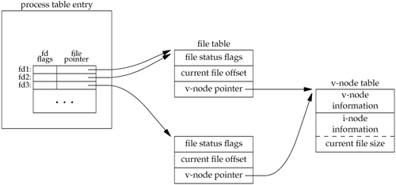

Chapter 3
| 3.1 | All disk I/O goes through the kernel's block buffers (also called the kernel's buffer cache). The exception to this is I/O on a raw disk device, which we aren't considering. Chapter 3 of Bach [1986] describes the operation of this buffer cache. Since the data that we read or write is buffered by the kernel, the term unbuffered I/O refers to the lack of automatic buffering in the user process with these two functions. Each read or write invokes a single system call. | | 3.3 | Each call to open gives us a new file table entry. But since both opens reference the same file, both file table entries point to the same v-node table entry. The call to dup references the existing file table entry. We show this in Figure C.2. An F_SETFD on fd1 affects only the file descriptor flags for fd1. But an F_SETFL on fd1 affects the file table entry that both fd1 and fd2 point to.

| | 3.4 | If fd is 1, then the dup2(fd, 1) returns 1 without closing descriptor 1. (Remember our discussion of this in Section 3.12.) After the three calls to dup2, all three descriptors point to the same file table entry. Nothing needs to be closed.
If fd is 3, however, after the three calls to dup2, four descriptors are pointing to the same file table entry. In this case, we need to close descriptor 3. | | 3.5 | Since the shells process their command line from left to right, the command
./a.out > outfile 2>&1
first sets standard output to outfile and then dups standard output onto descriptor 2 (standard error). The result is that standard output and standard error are set to the same file. Descriptors 1 and 2 both point to the same file table entry. With
./a.out 2>&1 > outfile
however, the dup is executed first, causing descriptor 2 to be the terminal (assuming that the command is run interactively). Then standard output is redirected to the file outfile. The result is that descriptor 1 points to the file table entry for outfile, and descriptor 2 points to the file table entry for the terminal. | | 3.6 | You can still lseek and read anywhere in the file, but a write automatically resets the file offset to the end of file before the data is written. This makes it impossible to write anywhere other than at the end of file. |
|